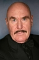

Country:Australia, 103 minutes
Spoken languages:English
Genres:Action, Crime, Thriller
Director(s):Sandy Harbutt
Writer(s):Michael Robinson, Sandy Harbutt
Video Codec:Unknown
Number: 2955


Certification:
Storyline:
After one of its members witnesses a political assassination, an outlaw motorbike gang becomes the target of a string of murders, prompting a cop to join their ranks to determine who is responsible.
Cast: 


Medium: Bluray,
Loaned: No
Aspect ratio: Unknown